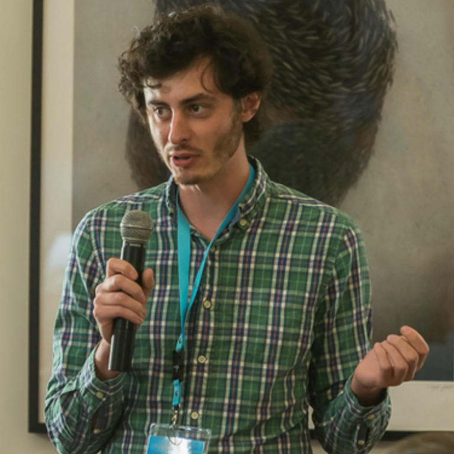
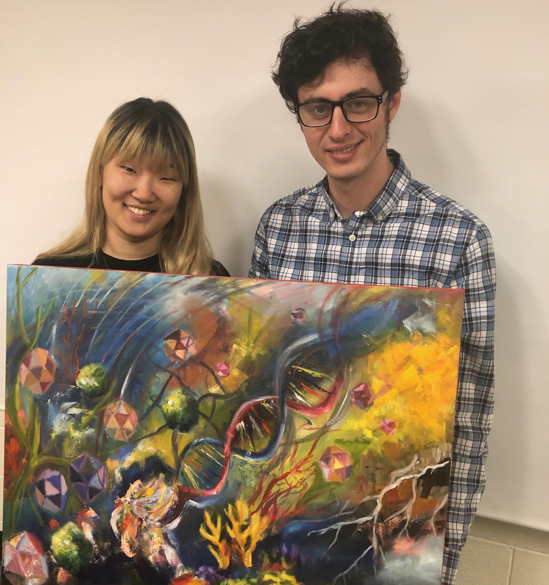

|
|
| dd/mm/yyyy: |
|
| 07/03/2024: |
Our paper: Disentangling top-down drivers of mortality underlying diel population dynamics of Prochlorococcus in the North Pacific Subtropical Gyre is now published in Nature Communications. I posted a new summary blog post on the topic here. |
| 06/02/2024: |
I posted a new blog post: "Reflecting on communicating COVID-19 exposure risks". |
| 31/01/2024: |
I visited Shweta Bansal and her research lab at Georgetown University and presented our research on wastewater prevalence estimation. |
| 20/12/2023: |
I am now an Associate Research Scientist at the University of Maryland. |
| 30/11/2023: |
Spoke to and answered questions from local highschoolers interested in learning about science and scientific research. |
| 08/11/2023: |
Spanish version of the COVID-19 Immunity Estimator tool is released. |
| 07/11/2023: |
I gave a talk at the SCOPE annual meeting titled: "Modeling microbial trophic interactions". |
| 30/10/2023: |
Presented collaborative work on wastewater prevalence estimation to the 2023 Annual MIDAS meeting. |
| 05/10/2023: |
Our paper studying the effectiveness of the COVID-19 Event Risk tool is now published in PLoS ONE. |
| 01/10/2023: |
I joined the University of Maryland as a Visiting Assistant Research Scientist in the Department of Biology. |
| 25/08/2023: |
We released the online COVID-19 Immunity Estimator tool: covid19immunity.com. |
| 18/08/2023: |
Our research on perceptions related to immunity and COVID-19 booster vaccinations is now online as a preprint. |
| 23/06/2023: |
I visited with Elaine Luo and the Microbial ecology lab at the University of North Carolina-Charlotte. |
| 15/06/2023: |
I visited with the Talmy group at the University of Tennessee, and gave a seminar titled "Modeling virus impacts across systems: from marine microbial communities to COVID-19". |
| 27/04/2023: |
Our research on evaluating responses to COVID-19 informational social media adverts is now published online at the Journal of Applied Research in Memory and Cognition. |
| 16/02/2023: |
I participated in the Serrapilheira/ICTP-SAIFR Training Program in Quantitative Ecology in São Paulo, teaching a mix of undergraduate and masters students from different backgrounds about principles and modelling in predator-prey dynamics, evolutionary ecology and epidemiology. I also gave talks on "Applying quantitative principles to develop public facing tools for COVID-19" and "How does code and science get published?". |
| 21/01/2023: |
The Journal of Open Source Software published our paper describing the localcovid19now R package. The package provides functions to download and map recent localised COVID-19 case data in an effort to improve the understanding of localised COVID-19 transmission. |
| 20/01/2023: |
Our manuscript investigating reasons why US adults are, or are not, electing to get the COVID-19 bivalent vaccine is now published in the Morbidity and Mortality Weekly Report (MMWR). |
| 03/12/2022: |
An update to our manuscript: “Diel population dynamics and mortality of Prochlorococcus in the North Pacific Subtropical Gyre” available as a preprint on bioRxiv. |
| 22/09/2022: |
A preprint is now online describing our R package, localcovid19now, to process and visualize regional COVID-19 case data across multiple countries. |
| 08/09/2022: |
Hosted Mallory Harris (Stanford) in the WeitzLab and worked on problems related to epidemic dynamics. |
| 01/07/2022: |
I was promoted to Research Scientist II at Georgia Tech. |
| 23/06/2022: |
A preprint is now online describing the efficacy of different COVID-19 messaging strategies on different demographic groups. |
| 09/02/2022: |
Submitted our latest work exploring and assessing the impact of the COVID-19 event risk assessment planning tool by analyzing how users interact with the tool. A preprint is now online. |
| 20/01/2022: |
Our manuscript exploring temporal niche partitioning of resources and metabolism of marine microbes in the North Pacific is now online in Nature Ecology and Evolution. |
| 01/12/2021: |
Our manuscript describing the deployment of Georgia Tech's surveillance testing system for COVID-19 is now online at Epidemiology. |
| 23/09/2021: |
We added interactive survey elements and the Risk Guessing Game to the COVID-19 event risk assessment planning tool for research in collaboration with cognitive neuroscientists at Duke University. |
| 09/09/2021: |
A video highlighting our work and communication through the COVID-19 event risk assessment planning tool has been published by RStudio. |
| 21/08/2021: |
Our manuscript describing how population-level immunity can be estimated: “A framework for monitoring population immunity to SARS-CoV-2" is now online at Annals of Epidemiology. |
| 16/06/2021: |
Submitted our newest manuscript: “Diel population dynamics and mortality of Prochlorococcus in the North Pacific Subtropical Gyre” available as a preprint on bioRxiv. |
| 17/05/2021: |
I helped with instructing the 2021 QBioS Hands-on Modeling Virtual Workshop on Epidemics. |
| 10/05/2021: |
Presented collaborative work on spatial epidemic modelling in Georgia and on the COVID-19 event risk assessment planning tool to the 2021 Annual MIDAS meeting. |
| 22/04/2021: |
Judged at the 2021 Undergraduate Research Symposium at Georgia Tech. |
| 20/04/2021: |
Initial release of the Population-level Immunity dashboard for the United States developed with Quan Nguyen and Joshua Weitz. |
| 24/03/2021: |
Mary Wang’s artwork "Us" relating human decision making and behavior to COVID-19 risk via our COVID-19 Event Risk Assessment Planning Tool was showcased at the 2021 Science.Art.Wonder artist showcase. |
| 05/03/2021: |
Sigma Xi award to Joshua Weitz and Clio Andris for our paper: "Real-time, interactive website for US-county-level COVID-19 event risk assessment". |
| 03/12/2020: |
I presented a seminar at Louisiana State University titled: “Modeling virus impacts across systems: from marine microbial communities to COVID-19”. |
| 22/11/2020: |
The COVID-19 Event Risk Assessment Planning Tool is extended to provide sub-national risk estimates in Denmark, Ireland and Sweden. |
| 18/11/2020: |
Many news articles about the COVID-19 Event Risk Planning Tool. A couple I'd like to highlight are from the LA Times and Wired. I've also been interviewed about our tool by the media for audiences in Lafeyette, Las Vegas, Memphis, Kansas City, Green Bay, Orlando and Montana. |
| 27/10/2020: |
The COVID-19 Event Risk Assessment Planning Tool is extended to provide sub-national risk estimates in the Czech Republic and Spain. |
| 10/11/2020: |
Release of an interactive dashboard showcasing the status of COVID-19 in the state of Georgia. This RShiny dashboard is based on figures I have been releasing on a regular basis via twitter and which have previously been shown in Georgia Tech. COVID-19 townhalls. |
| 09/11/2020: |
Our paper describing the COVID-19 Event Risk Assessment Planning Tool is now published in Nature Human Behaviour. |
| 28/10/2020: |
The COVID-19 Event Risk Assessment Planning Tool is featured at Government Technology as MetroLab Network's Innovation of the Month. |
| 19/10/2020: |
The COVID-19 Event Risk Assessment Planning Tool is extended to provide sub-national risk estimates in Austria and France. |
| 05/10/2020: |
The COVID-19 Event Risk Assessment Planning Tool is extended to provide sub-national risk estimates in Italy, Switzerland and the UK. |
| 11/09/2020: |
Our paper measuring infected cyanobacteria in the North Pacific and quantifying viral-induced mortality is now online. |
| 18/05/2020: |
I helped instruct the 2020 QBioS Hands-on Modeling Virtual Workshop on Epidemics. |
| 15/05/2020: |
Slate featured an op-ed, written with Joshua Weitz, about reporting lags and the interpretation of case data, and the possibility of epidemic plateaus in Georgia. |
| 07/05/2020: |
Our paper modelling the potential of "serological shielding" is now publsihed in Nature Medicine. |
| 01/05/2020: |
Press: WABE covers our intial COVID-19 projections in Georgia using MAGE. |
| 28/04/2020: |
We released an executive summary report for Georgia on the potential for COVID-19 to return if physical distancing interventions are lifted too soon using a metapopulation age-structured epidemiological model (MAGE). |
| 12/03/2020: |
I presented a Biological Sciences seminar at the University of Chicago at Illinois on "Quantifying the ecological relevance of grazing and viral lysis in marine microbial communities". |
| 02/03/2020: |
I gave the Microbial Dynamics seminar at Georgia Tech on our work on estimating mortality in marine microbial communities. |
| 17/02/2020: |
I presented our work on modelling microbial populations in the North Pacific Subtropical Gyre at Ocean Sciences Meeting 2020 in San Diego. |
| 06/02/2020: |
I gave the Physics of Living Systems seminar titled: "Quantifying the ecological relevance of grazing and viral lysis in marine microbial communities". |
| 01/12/2019: |
Our new paper describing how biogeochemistry relates to changes in sea surface height at Station ALOHA is now published in the Journal Of Marine Research. |
| 02/11/2019: |
Got pedalling in support of spin4 crohn's and colitis. |
| 15/09/2019: |
Arrived at the Technion to take part in the Phytoplankton Mortality Workshop to cross-compare phytoplankton mortality measurements. |
| 02/06/2019: |
Our paper describing a model to estimate carbon fluxes through grazing and viral infection is now published in Environmental Microbiology. |
| 29/05/2019: |
I presented a professional development talk to the Quantitative Biosciences Graduate Program titled "Inside the Reviewing Process". |
| 13/04/2019: |
Our new paper about size-dependent encounter rates between microbes and their predators is now published at Frontiers in Marine Science. I wrote a summary here. |
| 30/03/2019: |
Was on hand to discuss the Science.Art.Wonder project today (and on 23/03/2019 at the Atlanta Science Festival) with Emily Madsen. One piece "Submerged" explores the capacity for viruses to affect marine ecosystems; whilst the second, "Through a different Model" focuses on the process and art of modelling using a size-structured phytoplankton model I am developing as an example. |
| 25/03/2019: |
Curated the @biotweeps twitter account for a week where I enthused about modelling and marine viruses! |
| 28/02/2019: |
I have been promoted to Research Scientist I at Georgia Tech. |
| 07/12/2018: |
Hosted Emily Madsen in the WeitzLab to discuss communicating my research through art as part of the Science.Art.Wonder project. |
| 03/12/2018: |
I gave a talk at the SCOPE annual meeting titled: "Diel with it: Data-model comparisons of diel ecological oscillations around station ALOHA". |
| 10/11/2018: |
I volunteered with Habitat for Humanity in Atlanta. |
| 20/09/2018: |
I presented "Viral Lysis vs. Grazing: perspectives on phytoplankton mortality” at the 5th Georgia Tech Postdoctoral Research Symposium. |
| 04/09/2018: |
Our new paper on modelling the robustness of dilution based estimates of rates of viral-induced mortality is now published in Frontiers in Microbiology. I wrote a summary here. |
| 30/08/2018: |
Our software package for calculating nestedness, FALCON, has been used as an example of how to wrap a MATLAB package in python by KCL researcher Orazio Angelini. |
| 20/06/2018: |
Presented a talk: "Viral Lysis vs. Grazing: Perspectives on Phytoplankton Mortality” at the 9th Aquatic Viral Workshop in Lincoln, Nebraska (USA). |
| 13/02/2018: |
Presented a poster and co-chaired a session on "A Matter of Life and Death: The Role of Microbial Interactions in Mediating Biogeochemical Cycles" at the Ocean Sciences Meeting 2018 in Portland (USA). |
| 13/12/2017: |
Presented a seminar at the Marine Biological Association in Plymouth (UK) on: "Quantifying the ecological relevance of viral lysis in complex microbial communitites" |
| 19/10/2017: |
Gave a presentation: “Estimating viral impact on marine phytoplankton” in the GT Biological Sciences Microbial Dynamics seminar series. |
| 13/10/2017: |
Hosted Sarah Hu (USC) in the WeitzLab and worked on problems relating to timeseries analysis and Eukaryote communities. |
| 21/09/2017: |
I organised and chaired the sessions at the 4th Annual Postdoctoral Research Symposium at Georgia Tech – 24 great speakers from across the campus! |
| 20/09/2017: |
Our brief communication arising: Lysis, lsyogeny and virus-microbe ratios has been published in Nature – also see a response to our correspondence here. |
| 06/07/2017: |
I am helping to organise the 4th Postdoctoral Research Symposium at Georgia Tech to take place on the 21st September 2017. |
15/05/2017: |
Our work on attempting to separate grazing effects from niche competition effects in phytoplankton dilution experiments is now published in PLOS ONE. |
| 31/03/2017: |
The algorithms I advocate using for computing modularity for weighted bipartite networks are now the default behaviour in the latest version of the R bipartite package (v2.08) on CRAN. |
| 08/03/2017: |
Hosted David Talmy (MIT) in the WeitzLab and worked on problems relating to grazers and viruses. |
| 03/03/2017: |
I attended the ASLO Ocean sciences meeting and presented work on the dilution method in Hawai`i. |
| 18/07/2016: |
I presented a poster related to our dilution method work at Viruses of Microbes 2016 in Liverpool. |
| 11/07/2016: |
I spoke at the 8th Viral Aquatic Workshop in Plymouth about the theoretical underpinnings of the dilution method for estimating plankton mortality. |
| 23/01/2016: |
I attended my graduation ceremony at the University of Exeter, where I was duly hooded, gowned and embraced! |
| 20/01/2016: |
My paper on weighted modularity in bipartite networks is now up at RSOS. I wrote a short blog post about it. |
| 19/09/2015: |
Spoke at the "Living systems: from interaction patterns to critical behavior" workshop in Venice about phage-bacteria coevolutionary dynamics. |
| 07/09/2015: |
Completed my first review for the journal: Methods in Ecology and Evolution. |
| 17/08/2015: |
I have joined the Weitz lab @ Georgia Tech as a PostDoc. |
| 29/07/2015: |
My degree has been officially conferred - I am now Dr. Stephen Beckett! |
| 19/07/2015: |
New website is being designed (quite excited by how this is turning out!) |
|
⇡ close ⇡
|
Link to my CV: Download
I am an Associate Research Scientist in the in the Quantitative Viral Dynamics group at the University of Maryland. I use mathematical and computational methods to investigate and solve ecological and environmental problems. In this sense, I like to term myself a computational ecologist. My current research interests lie in investigating the ecology of aquatic microbial communities. Previously, I graduated with a BSc (Hons) in Geography and Mathematics from the University of Leeds in 2010, an MRes in Mathematics in the Living Environment from the University of York in 2011 — during which I completed a research internship with the Computational Science Lab at Microsoft Research in Cambridge. I earned my PhD in Biological Sciences from the University of Exeter in 2015. Following this, I made a transatlantic move to the School of Biological Sciences at Georgia Tech. where I was a Postdoctoral Fellow (2015-2019), Research Scientist I (2019-2022) and Research Scientist II (2022-2023) before moving to the University of Maryland.


|

|
|
I believe one step towards making science more available in general, is to provide free and open access to research materials. I do not agree with the predominantly expensive open access options provided by many publishers, but am a strong advocate of making pre/post-prints of my research available. If I write a paper, I would sure like to make it as easy as possible, for as many people as possible, to be able to read and use the information discovered! Specific journal policies on this matter can be found using SHERPA/RoMEO.
In my spare time I enjoy being in the great outdoors, especially on the coast. Some of the other things I like to do are playing the harmonica (badly), reading books and playing computer games. Chances are, I am thinking about the sea right now.
|
⇡ close ⇡
|
Quantifying Microbial Mortality
There are estimated to be over 1030 viruses of prokaryotic bacteria, known as bacteriophage or just phage, in the worlds oceans (Suttle, 2005) which makes them an important component of the global marine ecosystem and ocean biogeochemistry. However, there are diverging estimates of virus-induced mortality relative to grazing-induced mortality in marine microbiology. My research focuses on better quantifying microbial mortality processes – with a particular interest in cyanobacteria – as differing mortality pathways have different biogeochemical consequences. In general, a goal is towards improving understanding and representation of mortality processes in marine microbial populations, and in larger ecosystem models.
Ecological Dynamics and Community Structure
Ecological communities are composed of multiple types of organisms and interactions. Emergent dynamics of these communities are a function of the ways in which these interactions are organised and structured within a community. A particular interest is considering surface marine microbial communities where day-night cycles and life-cycle oscillations of photosynthesisers tend to synchronize. How does the community organise around such constraints? Additionally, microbial systems tend to be those in which (co)evolutionary dynamics can occur on ecological timescales.
Pandemic Response and Preparedness
Behavioral feedback is a critical component in understanding transmission dynamics of communicable diseases, including COVID-19, and can be influenced via policy and individual decision making. My research focuses on how leveraging data can lead to improve understanding of pandemic-associated risks, and aid decision making and outbreak mitigation.
|
⇡ close ⇡
|
The categories below highlight my publications, software and other research outputs. Click on a category to expand or contract it. I try my best to provide open access to all my research, but please email me if you are finding it hard to access something I've published. You may also be interested in viewing my Google Scholar and ResearchGate profiles.
|
|
| Beckett S.J., Demory D., Coenen A.R., Casey J.R., Dugenne M., Follett C.L., Connell P., Carlson M.C.G., Hu S.K., Wilson S.T., Muratore D., Rodriguez-Garcia R.A., Peng S., Becker K.W., Mende D.R., Armbrust E.V., Caron D.A., Lindell D., White A.E., Ribalet F., Weitz J.S. Disentangling top-down drivers of mortality underlying diel population dynamics of Prochlorococcus in the North Pacific Subtropical Gyre. |
| |
|
|
| Sinclair A.H., Taylor M.K., Brandel-Tanis F., Davidson A., Chande A.T., Rishishwar L., Andris C., Adcock R. A., Weitz J.S., Samanez-Larkin G.R., Beckett S.J. Communicating COVID-19 exposure risk with an interactive website counteracts risk misestimation.2023. PLoS ONE 18(10): e0290708. |
| |
|
|
| Sinclair A.H., Taylor M.K., Davidson A., Weitz J.S., Beckett S.J., Samanez-Larkin G.R. Scenario-Based Messages on Social Media Motivate COVID-19 Information Seeking.2023. Journal of Applied Research in Memory and Cognition. |
| |
|
|
| Beckett S.J., Brandel-Tanis F.A., Nguyen Q., Chande A.T., Rishishwar L., Andris C., Weitz J.S. localcovid19now: processing and mapping COVID-19 case data at subnational scales.2023. Journal of Open Source Software 8(81): 4898. [ code] |
| |
|
|
| Sinclair A.H., Taylor M.K, Weitz J.S., Beckett S.J., Samanez-Larkin G.R. Reasons for Receiving or Not Receiving Bivalent COVID-19 Booster Vaccinations Among Adults — United States, November 1–December 10, 2022.2023. MMWR: Morbidity & Mortality Weekly Report 72: 73-75. |
| |
|
|
| Muratore D., Boysen A.K., Harke M.J., Becker K.W., Casey J.R., Coesel S.N., Mende D.R., Wilson S.T., Aylward F.O., Eppley J.M., Visolova A., Peng S., Rodgriguez-Gonzalez R.A., Beckett S.J., Armbrust E.V., DeLong E.F., Karl D.M., White A.E., Zehr J.P., Van Mooy B.A.S, Dyhrman S.T., Ingalls A.E., Weitz J.S. Complex Marine Microbial Communities Partition Metabolism of Scarce Resources Over the Diel Cycle. |
| |
|
|
| Gibson G., Weitz J.S., Shannon M.P., Holton B., Bryskin A., Liu B., Sieglinger M., Coenen A.R., Zhao C., Beckett S.J., Bramblett S., Williamson J., Farrell M., Ortiz A., Abdallah C.T., García A.J. Surveillance-to-Diagnostic Testing Program for Asymptomatic SARS-CoV-2 Infections on a Large, Urban Campus in Fall 2020.2022. Epidemiology 33(2): 209-216. [ code] |
| |
|
|
| Lopman B.A., Shioda K., Nguyen Q., Beckett S.J., Siegler A.J., Sullivan P.S., Weitz J.S. A framework for monitoring population immunity to SARS-CoV-2. |
| |
|
|
| Mruwat N., Carlson M.C.G., Goldin S., Ribalet F., Kirzner S., Hulata Y., Beckett S.J., Shitrit D., Weitz J.S., Armbrust E.V., Lindell D. A single-cell polony method reveals low levels of infected Prochlorococcus in oligotrophic waters despite high cyanophage abundances2021. The ISME Journal 15: 41–54. [ readcube] |
| |
|
|
| Chande A., Lee, S., Harris M., Nguyen Q., Beckett S.J., Hilley T., Andris C., Weitz J.S. Real-time, interactive website for US-county-level COVID-19 event risk assessment |
| |
|
|
| Weitz J.S., Beckett S.J., Coenen A.R., Demory D., Dominguez-Mirazo M., Dushoff J., Leung C.-Y., Li G., Măgălie A., Park S.W., Rodriguez-Gonzalez R., Shashwat S., Zhao C.Y. Modeling shield immunity to reduce COVID-19 epidemic spread |
| |
|
|
| Barone B., Coenen A.R., Beckett S.J., McGillicuddy Jr. D.J., Weitz J.S., Karl D.M. The ecological and biogeochemical state of the North Pacific Subtropical Gyre is linked to sea surface height2019. Journal of Marine Research 77(S): 215-245. |
| |
|
|
| Talmy, D., Beckett S.J., Taniguchi D.A.A., Brussaard C.P.D., Weitz J.S., Follows M.J. An empirical model of carbon flow through marine viruses and microzooplankton grazers2019. Environmental Microbiology 21(6): 2171-2181. [ readcube] |
| |
|
|
| Talmy D., Beckett S.J., Zhang A., Taniguchi D.A.A., Weitz J.S., Follows M.J. Contrasting Controls on Microzooplankton Grazing and Viral Infection of Microbial Prey2019. Frontiers in Marine Science 6: 182. [ blog] |
| |
|
|
| Beckett S.J., Weitz J.S. The Effect of Strain Level Diversity on Robust Inference of Virus-Induced Mortality of Phytoplankton |
| |
|
|
| Weitz J.S., Beckett S.J., Brum J.R., Cael B.B., Dushoff J. Lysis, lysogeny, and virus-microbe ratios |
| |
|
|
| Beckett S.J., Weitz J.S. Disentangling niche competition from grazing mortality in phytoplankton dilution experiments |
| |
|
|
| Beckett S.J. Improved community detection in weighted bipartite networks2016. Royal Society Open Science 3: 140536. [ code] [ blog] |
| |
|
|
| Beckett S.J. Nestedness and modularity in bipartite networks2015. PhD Thesis, University of Exeter, UK. |
| |
|
|
| Cowley L.A., Beckett S.J., Chase-Topping M., Perry N., Dallman T.J., Gally D.L., Jenkins C. Analysis of whole genome sequencing for the Escherichia coli O157:H7 typing phages2015. BMC Genomics 16: 271. |
| |
|
|
| Beckett S.J., Boulton C.A., Williams H.T.P. FALCON: a software package for analysis of nestedness in bipartite networks2014. [v1; ref status: indexed, http://f1000r.es/3z8] F1000Research 3: 185. [ code] |
| |
|
|
| Watts A.J.R., Lewis C., Goodhead R.M., Beckett S.J., Moger J., Tyler C.R., Galloway T.S. Uptake and retention of microplastics by the shore crab Carcinus maenas 2014. Environmental Science & Technology 48(15): 8823-8830. |
| |
|
|
| Beckett S.J., Williams H.T.P. Coevolutionary diversification creates nested-modular structure in phage-bacteria interaction networks2013. Interface Focus 3: 20130033. [ blog] |
⇡ close ⇡
|
|
| Beckett S.J., Brandel-Tanis F., Nguyen Q., Chande A., Rishishwar L., Andris C., Weitz J.S. localcovid19now: processing and mapping COVID-19 case data at subnational scales.2023. Zenodo. |
| |
|
|
| Beckett S.J. weighted-modularity-LPAwbPLUS: Improved community detection in weighted bipartite networks2015. Zenodo. |
| |
|
|
| Beckett S.J., Boulton C.A., Williams H.T.P. FALCON: nestedness statistics for bipartite networks2014. figshare. |
⇡ close ⇡
|
|
| Beckett S.J., Williams H.T.P. Synthetic matrix ensemble for nestedness analysis2015. figshare. |
⇡ close ⇡
|
|
| Beckett S.J., Williams H.T.P. Coevolved nestedness and modularity in phage-bacteria infection networks2013. figshare. |
| |
|
|
| Beckett S.J., Williams H.T.P. Towards trait-based models for aquatic virology2012. figshare. |
⇡ close ⇡
|
|
| Beckett S.J. Online tools for researchers2013. figshare. |
⇡ close ⇡
|
|
| Harris J.D., Gallmeier E., Beckett S.J., Weitz J.S. Infections are not alike: the effect of covariation between individual-level susceptibility and transmissibility on population-level epidemic dynamics.In prep. |
| |
|
|
| Sinclair A.H., Taylor M.K., Weitz J.S., Beckett S.J., Samanez-Larkin G.R. Personalized Feedback about COVID-19 Immunity Corrects Risk Misestimation and Motivates Booster Vaccinations. |
| |
|
|
| Beckett S.J., Dominguez-Mirazo M., Lee S., Andris C., Weitz J.S. Spread of COVID-19 through Georgia, USA. Near-term projections and impacts of social distancing via a metapopulation model. |
| |
| |
⇡ close ⇡
|
⇡ close ⇡
|
|